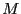
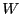

Next: Conclusions Up: Yet Another Lisp Interpreting Previous: Syntax
We will formally specify only a few methods here. A short description of all the methods used by the interpreter can be found in the accompanying README file.
In order to specify these methods, we will need a few helper
functions. The lookup function,  , takes a store, an object
reference, and a method name and returns the method of that name
belonging to the closest ancestor of the object.
, takes a store, an object
reference, and a method name and returns the method of that name
belonging to the closest ancestor of the object.

The method invoker, , returns the value of a method call on a given object under a given scope and store. That is, it invokes functions which return an object reference, a new scope, and a new store.
Lastly, our wrapper function, , takes a function of some arguments and returns a function that implicitly evaluates those arguments before beginning. This is necessary because the ``call'' function will need to circumvent implicit evaluation of arguments. Evaluation is accomplished by the ``eval'' method, which each object will define.
Now we can define some of the important methods. The basic eval function simply returns the value of the caller.
For an example of the use of the wrapper, the method for addition over the integers is
Finally, here is the critical ``call'' method for the msg function object.
Jack O'Connor 2009-05-04